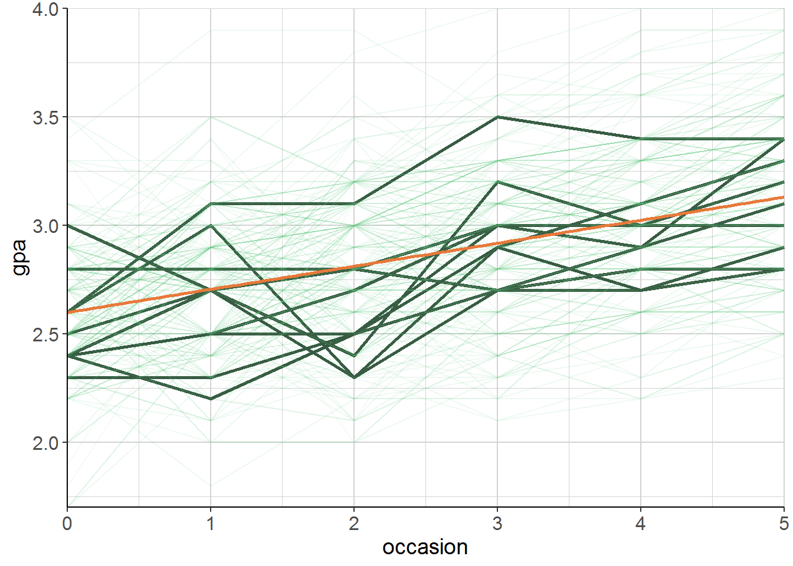

2.1 Generelle Logik
Studenten werden an verschiedenen Zeitpunkten (occasions) getestet (GPA). Zeitpunkte sind ein Haupteffekt. Individuelle Effekte der Studenten werden Modell hinzugefügt:
\[ \mathrm{gpa}=b_{\mathrm{intercept}}+b_{\mathrm{occ}} \cdot \text { occasion }+\left(\text {effect }_{\mathrm{student}}+\epsilon\right) \]
- Der einzige Unterschied zwischen einem mixed model und einer standardmäßigen Regression: random student effect
- Normalverteilt mit \(M = 0\) und irgendeiner geschätzten Standardabweichung \(\tau\)
- Im Mittel kein Effekt, aber variiert von Student zu Student im Mittel um \(\tau\)
\[ \text{effect}_\text{student} \sim \mathscr { N } ( 0 , \tau ) \]
Jeder Student hat seinen eigenen Effekt, der zum allgemeinen intercept hinzugefügt wird. Das heißt, jeder Student hat sein eigenes intercept, mit anderen “Worten”:
\[ \mathrm{gpa}=b_{\mathrm{int} \text { student }}+b_{\mathrm{occ}} \cdot \text { occasion }+\epsilon \] Das heißt: Intercepts sind jetzt normalverteilt. Das overall Intercept als Mittelwert mit irgendeiner SD \(\tau\).
\[ b_{\text { int } \text { student }} \sim \mathscr{N}\left(b_{\text { intercept }}, \tau\right) \]
Wenn man die einzelnen Studenten plottet, sieht man gut, wieso es eine gute Idee ist, die Individualität pro Student zu berücksichtigen: Die Variablität in den Startpunkten und die Entwicklung über die Zeit ist ist hoch.
load("data/gpa.RData")
# Random 10 Einzellinien highlighten
gpa <- gpa %>%
mutate(highlight = ifelse(student %in% sample(unique(student), 10), TRUE, FALSE))gpa %>%
ggplot(aes(x = occasion, y = gpa)) +
geom_line(aes(group = student, colour = highlight, alpha = highlight,
size = highlight)) +
geom_smooth(method = "lm", colour = farbschema[1], se = FALSE) +
scale_alpha_manual(values = c(.1, 1)) +
scale_size_manual(values = c(.5, 1)) +
scale_colour_manual(values = pick_colour(2, "mono_green")) +
labs(title = "Rohdaten") +
julis_theme +
theme(legend.position = "none") +
scale_y_continuous(expand = c(0, 0)) +
scale_x_continuous(expand = c(0, 0))
\(\to\) Siehe Skript uebungen.R – Übung #1 für einfache Regression.
2.1.1 Problem einfache Regression
- Clustering wird ignoriert.
- Man verpasst die (interessanten) Studenten-Effekte.
- Die Standardfehler sind biased \(\to\) Aussagen über statistische Signifikanz werden hinfällig
- Eine Regression pro Student
- hätte zu wenig Daten.
- “over-contextualised” \(\to\) ignoriert, was die Studenten gemeinsam haben